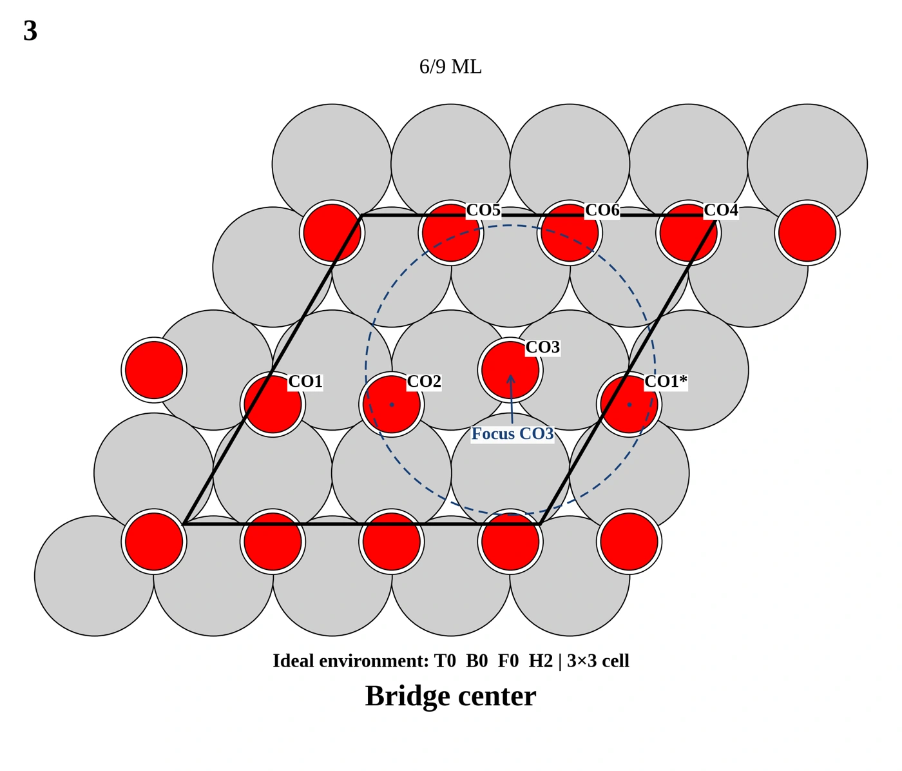
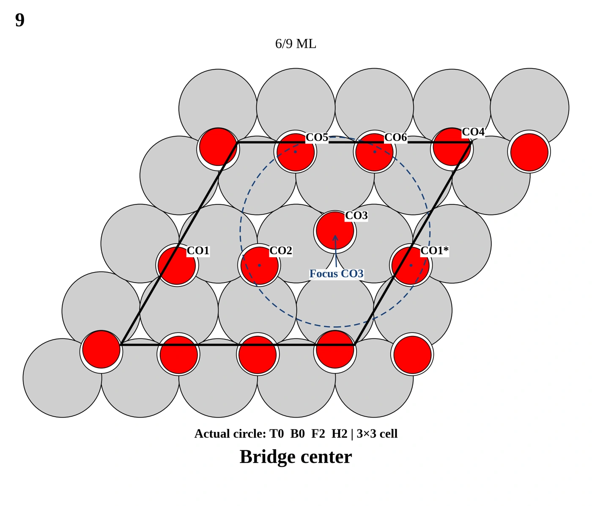

Ideal-site projection · I3

T0 B0 F0 H2
PNG for PowerPoint · Vector SVG · PDF
6/9 ML · CO3 at a bridge site · Neighbourhood radius 3.35 Å

T0 B0 F0 H2
PNG for PowerPoint · Vector SVG · PDF

T0 B0 F2 H2
PNG for PowerPoint · Vector SVG · PDF
| Neighbour pair | Ideal distance (Å) | Actual distance (Å) | Membership at 3.35 Å |
|---|---|---|---|
| CO3–CO5 (FCC) | 3.461153 | 3.165644 | Outside in ideal projection; inside in actual geometry |
| CO3–CO6 (FCC) | 3.461153 | 3.165846 | Outside in ideal projection; inside in actual geometry |
The left panel is the ideal-site projection of the same archived relaxed structure shown on the right. This is not a before/after trajectory of the recent 65 constrained relaxations. The actual structure comes from the archived config_000015/CONTCAR at 6/9 ML. Class IDs belong to two separate catalogues.